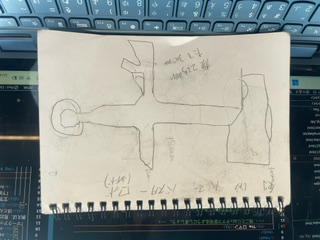
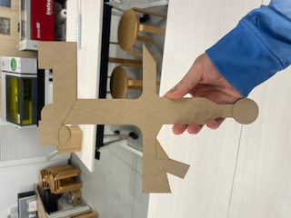
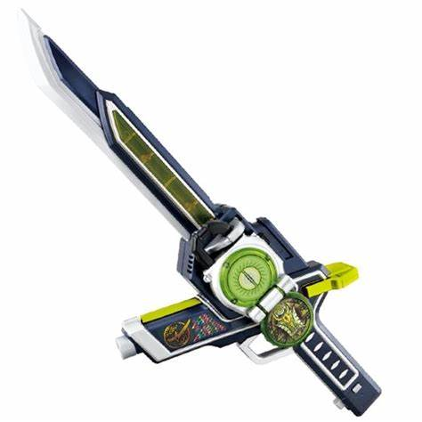

設計ファイル
作品の説明
これは最強の武器である
ベースとなっているのはソードであり、まずガードの部分が銃となっている
この銃口はとても鋭利なため、ダガーとして敵を刺したり、ナイフのように使用することも可能だ。
グリップ下部の丸は魔法の杖である。物理攻撃が効かない相手とも戦うことが出来る。
これだけでは終わらない
剣先のこの四角はハンマーである。このくぼみが気になった方もいるだろう。
聴いて驚くだろう。
これはバスターの射出口である。
どんな敵でも、あらゆるシチュエーションにでも対応できる
小学生が考える「僕が考えた最強の武器」を形にした。
現在進行形で小学生している子たちはもちろん、かつて最強の武器を妄想し、目を輝かせていたそこのあなた
のこころをもワクワクドキドキさせることのできる、ロマンの具現化
「THEロマン」である。
参考にしたもの

銃の位置を参考にした。